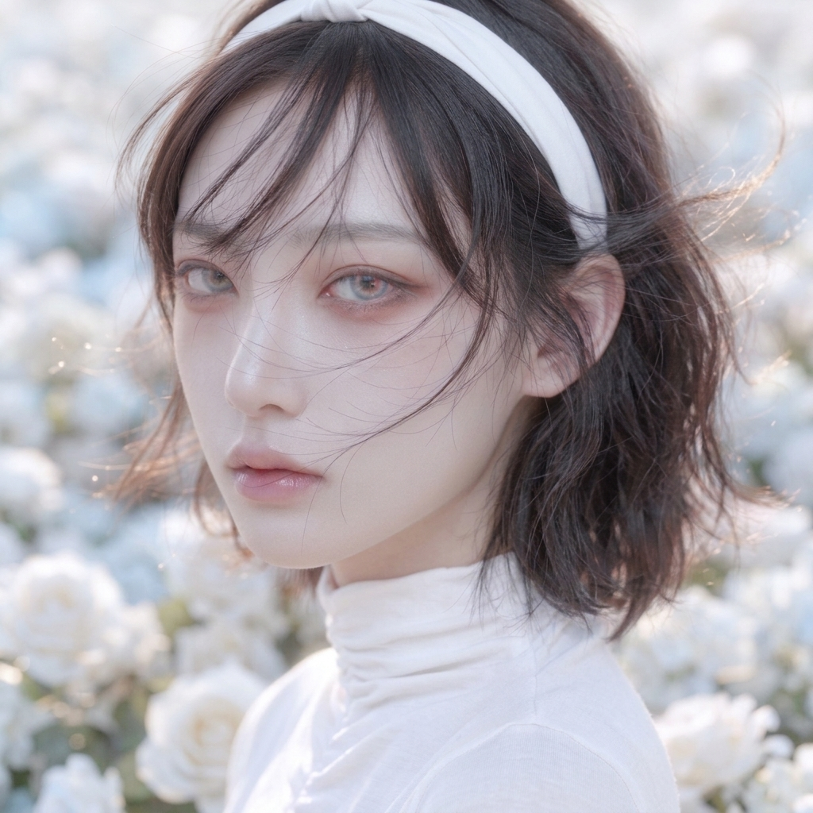
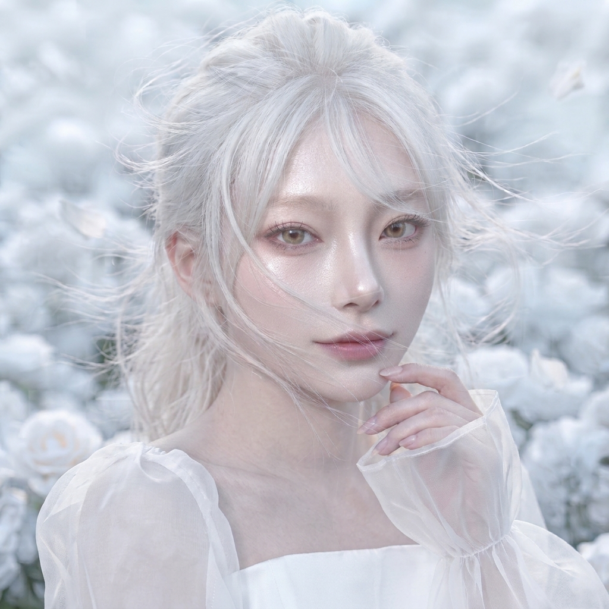

Yan 本名林烟（Lin Yan） 主唱、門面 台籍台裔 動物塑/樹懶；bd/01 ．溫溫柔柔小姐姐（表面上 ．反射弧有點長，個人技是模仿動物方程式裡的樹懶 ．白切黑，會講恐怖的話的姐姐，將笑面虎做到極致，比起江蕁，林烟生氣的時候更可怕 ．理性組，智商最高，是伯克利音樂學院跳級生，會十幾種樂器，是鋼琴首席，小提琴也很厲害 ．逆天的天生長睫毛，被笑稱是睫毛怪，壓根不用貼假睫毛 ．因為會五國語言，所以下意識會語言亂頻 ．全團裡看起來最不怕鬼但是是最怕鬼的，看完鬼片一定要抱著人睡覺，然後很長一段時間會很神經質 ．建於所有人都是瘋子上的正常人，嗯，也就是所有人都是正常人的時候她就是個瘋子 ．會海豚音，基本上本人和Eian就是江蕁的音效素材庫 ．討厭一切有關蟲的東西，尤其是毛毛蟲和蠶，但意外的不怕蟑螂 — About Us —  Xun more description  Zora more description Eian more description Jiyeon more description